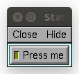
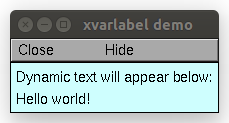

units · xbutton · xcheckbox · xfixedvalue · xlabel · xmenu · xpanel · xpvalue · xradiobutton · xslider · xstatebutton · xvalue · xvarlabel
GUI Widgets
The functions below are used to create panels of buttons, menus, and field editors.
It is often convenient to encapsulate GUI elements and their state variables in a class. This allows multiple independent instances to be created. For example:
from neuron import h, gui
class MyWindow:
def __init__(self):
self.mystate = 0
self.myval = 3.14
self.checkbox = 1
h.xpanel('demo')
h.xradiobutton('Click me', (self.clicked, 0), 1)
h.xradiobutton('or me', (self.clicked, 1), 0)
h.xstatebutton('press me', (self, 'mystate'), self.statepressed)
h.xcheckbox('I am a checkbox', (self, 'checkbox'), self.checkboxpressed)
h.xvalue('Type a number', (self, 'myval'), 1, self.numberset)
h.xpanel()
def clicked(self, choice):
print(f'you switched the radio button! choice = {choice}')
def statepressed(self):
print(f'you pressed the state button. Value = {self.mystate}')
def checkboxpressed(self):
print(f'you clicked the checkbox. state = {self.checkbox}')
def numberset(self):
print(f'you set the number to: {self.myval}')
window = MyWindow()
Note
Top-level variables can be accessed through this_module where that is defined via import sys; this_module = sys.modules[__name__]; see examples below.
- xpanel()
- Syntax:
h.xpanel('name') h.xpanel('name', [0-1]) h.xpanel() h.xpanel(x, y) h.xpanel(scroll) h.xpanel(scroll, x, y)
Description:
h.xpanel("name")h.xpanel("name", [0-1])Title of a new panel. Every button, menu, and value between this and a closing
xpanel()command with no arguments (or placement args) belongs to this panel. If the form is used with a second argument equal to 1, then the panel is laid out horizontally. Otherwise the default is vertically.
h.xpanel()h.xpanel(x, y)done constructing the panel. so map it to the screen with position optionally specified.
h.xpanel(scroll)h.xpanel(scroll, x, y)as above but if the first arg is a number, then the value determines whether the panel will be inside a scrollbox. Scroll = 0 means a scrollbox will NOT be used. Scroll = 1 means the panel will be inside a scrollbox. Scroll = -1 is the default value and whether or not a scrollbox is used is determined by the number of panel items in comparison with the value of the panel_scroll property in the nrn.defaults file.
- xbutton()
Syntax:
h.xbutton('prompt', py_callable)h.xbutton('prompt', (py_callable, arg))h.xbutton('prompt', (py_callable, (arg1, arg2, ...))Description:
Adds a button to the currently open
xpanel(). The label on the button is prompt, and when the button is clicked, it calls the py_callable. If instead of justpy_callablea tuple containingpy_callableand either an arg or tuple of args is passed, then those are passed to the function when the button is clicked; this can be used to allow one function to handle mutliple buttons, or buttons created in unknown situations.Example:
from neuron import h, gui def on_press(): print('You pressed the button.') h.xpanel('Button demo') h.xbutton('Press me', on_press) h.xpanel()

Example:
from neuron import h, gui def on_press(button_id): print(f'You clicked button: {button_id}') def on_press3(a, b): print(f'Button args: {a}, {b}') h.xpanel('Button demo 2') h.xbutton('Button 1', (on_press, 1)) h.xbutton('Button 2', (on_press, 2)) h.xbutton('Button 3', (on_press3, ('arg1', 'arg2'))) h.xpanel()

- xstatebutton()
- Syntax:
h.xstatebutton('prompt', (obj_or_module, 'varname') [, action_fn])
- Description:
like
xbutton(), but when pressed var is set to 0 or 1 so that it matches the telltale state of the button. If the var is set by another way the telltale state is updated to reflect the correct value.- Example:
- 
from neuron import h, gui import sys; this_module = sys.modules[__name__] button_state = 0 def on_press(): print(f'You pressed the button. The state is now: {button_state}') h.xpanel('StateButton demo') h.xstatebutton('Press me', (this_module, 'button_state'), on_press) h.xpanel()
- xcheckbox()
- Syntax:
h.xcheckbox('prompt', (obj_or_module, 'varname') [, action_fn])
- Description:
like
xstatebutton(), but checkbox appearance.
- xradiobutton()
- Syntax:
h.xradiobutton('name', action_fn [, 0 or 1])
- Description:
Like an
xbutton()but highlights the most recently selected button of a contiguous group (like a car radio, mutually exclusive selection). If the third argument is 1, then the button will be selected when the panel is mapped onto the screen. However, in this case the action should also be explicitly executed by the programmer. That is not done automatically since it is often the case that the action is invalid when the radio button is created. As withh.xbutton,action_fnmay be a Python function handle, a tuple containing a function handle and an argument, or a tuple containing a function handle and a tuple of arguments.
Example:
from neuron import h, gui def a(n): """function to be called when a radio button is toggled""" print(n) h.xpanel('panel') h.xmenu('menu') for i in range(1, 11): h.xradiobutton(f'item {i}', (a, i)) h.xmenu() h.xpanel()

- Syntax:
h.xmenu('title') h.xmenu() h.xmenu('title', 1) h.xmenu(title, py_callable) h.xmenu(title, py_callable, 1)
Description:
h.xmenu("title")create a button in the panel with label “title” which, when pressed, pops up a menu containing buttons and other menus. Every
xbutton()andxmenu()command between this and the closingxmenu()command with no arguments becomes the menu. Don’t put values into menus.h.xmenu()done defining the menu. Menus can be nested as in
from neuron import h, gui def selected1(): print('you selected option 1') def selected2(): print('you selected option 2') h.xpanel('xmenu demo') h.xmenu('one') h.xmenu('two') h.xbutton('option 1', selected1) h.xbutton('option 2', selected2) h.xmenu() h.xmenu() h.xpanel()

h.xmenu("title", 1)adds the menu to the menubar. Note that a top level menu with no second argument starts a new menubar. Normally these menubars have only one top level item.
from neuron import h, gui import sys def item_selected(n): print(f'selected value {n}') h.xpanel("menubar") h.xmenu("first") h.xbutton("one", (item_selected, 1)) h.xbutton("two", (item_selected, 2)) h.xbutton("Exit", sys.exit) h.xmenu() h.xmenu("second", 1) h.xbutton("three", (item_selected, 3)) h.xbutton("four", (item_selected, 4)) h.xmenu("submenu") h.xbutton("PI", (item_selected, h.PI)) h.xmenu() h.xmenu() h.xmenu("third", 1) h.xbutton("five", (item_selected, 5)) h.xbutton("six", (item_selected, 6)) h.xmenu() h.xmenu("nextline") h.xbutton("seven", (item_selected, 7)) h.xbutton("eight", (item_selected, 8)) h.xmenu() h.xpanel()

h.xmenu("title", py_callable)andh.xmenu("title", py_callable, 1)Dynamic menu added as item in panel or menu or (when third argument is 1) to a menubar. An example of the first type is the NEURONMainMenu/File/RecentDir and an example of the last type is the NEURONMainMenu/Window
When the menu title button is selected, the stmt is executed in a context like:
h.xmenu("title") py_callable() h.xmenu()
which should normally build a menu list and then this list is mapped to the screen as a normal walking menu.
from neuron import h, gui def select(i): print(f'you selected {i}') def make(): make.n += 1 for i in range(1, make.n + 1): h.xbutton(f'label {i}', (select, i)) make.n = 0 h.xpanel("test") h.xmenu("dynamic", make) xpanel()
Warning
The dynamic menu syntax is currently unsupported in Python, but the equivalent (passing a HOC command string) works in HOC.
- xlabel()
- Syntax:
h.xlabel('string')
- Description:
Show the string as a fixed label.
- xvarlabel()
- Syntax:
h.xvarlabel(strref)
- Description:
Show the string as its current value.
Example:
from neuron import h, gui mystr = h.ref('') h.xpanel('xvarlabel demo') h.xlabel('Dynamic text will appear below:') h.xvarlabel(mystr) h.xpanel() # change the text displayed by changing mystr mystr[0] = 'Hello world!'
Warning
Python strings are immutable. Thus the text displayed will only automatically change if a strref is used, as in the example.
- xvalue()
Syntax:
h.xvalue("prompt", (obj_or_module, "varname") [, boolean_deflt, "action" [, boolean_canrun]]) h.xvalue("prompt", ref_var, [, boolean_deflt, "action" [, boolean_canrun]]) h.xvalue("prompt", "variable", 2)
Description:
h.xvalue("prompt", (obj_or_module, "varname") [, boolean_deflt, "action" [, boolean_canrun]])create field editor for variable with the button labeled with “prompt”. If boolean_deflt == True (or 1) then add a checkbox which is checked when the value of the field editor is different that when the editor was created. Execute “action” when user enters a new value. If boolean_canrun == True (or 1) then use a default_button widget kit appearance instead of a push_button widget kit appearance.
h.xvalue("prompt", (obj_or_module, "varname"), 2)a field editor that keeps getting updated every 10th
doNotify().
Example:
from neuron import h, gui import sys; this_module = sys.modules[__name__] val = 42 h.xpanel('demo') h.xvalue('enter value', (this_module, 'val')) h.xpanel() # changing val in the dialog will change val as seen by the program

See also
The example at the top of the file, which uses
xvaluein an object.
- xpvalue()
- Syntax:
h.xpvalue('prompt', ref, ...)
- Description:
like
xvalue()but uses a reference to the variable.
Example:
from neuron import h, gui val = h.ref(42) def show_val(): print(f'value is: {val[0]}') h.xpanel('demo') h.xpvalue('enter value', val, 1) h.xbutton('show value', show_val) h.xpanel()

See also
- xfixedvalue()
Syntax:
h.xfixedvalue("prompt", (obj_or_module, "varname"), boolean_deflt, boolean_usepointer)
- Description:
like
xvalue()but cannot be changed by the user except under program control and there can be no action associated with it.
Warning
This is not implemented. For now, try to do the same thing with
xvarlabel().
- xslider()
- Syntax:
h.xslider((obj_or_module, "varname"), [low, high], [on_slide], [vert], [slow]) h.xslider(ref_var, [low, high], [on_slide], [vert], [slow])
- Description:
Slider which is attached to the variable var. Whenever the slider is moved, the optional on_slide is executed. The default range is 0 to 100. Steppers increase or decrease the value by 1/10 of the range. Resolution is .01 of the range. vert=True (or 1) makes a vertical slider and if there is no on_slide may be the 4th arg. slow=True (or 1) removes the “repeat key” functionality from the slider(and arrow steppers) and also prevents recursive calls to the on_slide. This is necessary if a slider action is longer than the timeout delay. Otherwise the slider can get in a state that appears to be an infinite loop. The downside of slow=1 is that the var may not get the last value of the slider if one releases the button during an action.
Examples:
from neuron import h, gui import sys; this_module = sys.modules[__name__] val = 42 val_str = h.ref('Slider value: ') def show_val(): val_str[0] = f'Slider value: {val}' h.xpanel('demo') h.xvarlabel(val_str) h.xslider((this_module, 'val'), 0, 100, show_val) h.xpanel() show_val()

It is slightly more efficient to use an
h.refinstead of a tuple. The above example is functionally equivalent to:from neuron import h, gui val = h.ref(42) val_str = h.ref('Slider value: ') def show_val(): val_str[0] = f'Slider value: {val[0]}' h.xpanel('demo') h.xvarlabel(val_str) h.xslider(val, 0, 100, show_val) h.xpanel() show_val()
You can also combine xslider with xvalue to report and modify its value (below example):
from neuron import h, gui class ValuePanel: def __init__(self, init_val=42, label='',lower_limit=0,upper_limit=100): self._val = h.ref(init_val) h.xpanel('demo') h.xlabel(label) h.xvalue('enter value', self._val, True, self._bounds_check) self.__lower_limit = lower_limit self.__upper_limit = upper_limit h.xslider(self._val, self.__lower_limit, self.__upper_limit) h.xpanel() def _bounds_check(self): self.val = self.val @property def val(self): return self._val[0] @val.setter def val(self, new_val): new_val = max(self.__lower_limit, new_val) self._val[0] = min(new_val, self.__upper_limit) if __name__=="__main__": hbox=h.HBox() # Horizontal box hbox.intercept(True) length=ValuePanel(label='length.val') diam=ValuePanel(init_val=2,label='diam.val',lower_limit=0, upper_limit=5) hbox.intercept(False) hbox.map() print('can read/change length.val, diam.val')

- units()
- Syntax:
on or off = h.units(1 or 0) current_units = h.units("varname" [, "units string"])
- Description:
When units are on (default on) value editor buttons display the units string (if it exists) along with the normal prompt string. Units for L, diam, Ra, t, etc are built-in and units for membrane mechanism variables are declared in the model description file. See modlunit . Note that units are NOT saved in a session. Therefore, any user defined variables must be given units before retrieving a session that shows them in a panel.
The units display may be turned off with
h.units(0)or by setting the*units_on_flag: offin the nrn/lib/nrn.defaults file.If the first arg is a string, it is treated as the name of the variable. This is restricted to hoc variable names of the style, “name”, or “classname.name”. Apart from the circumstance that the string arg style must be used when executed from Python, a benefit is that it can be used when an instance does not exist (no pointer to a variable of that type). If there are no units specified for the variable name, or the variable name is not defined, the return value is the empty string.
Examples:
print(h.units('dt')) # ms print(h.units('gna_hh')) # S/cm2 print(h.units('Ra')) # ohm-cm print(h.units('L')) # um print(h.units('ExpSyn.g')) # uS
Warning
When passing a string to
h.units, note that the string must be the name of a HOC variable. Unfortunately, there is currently no way to declare the units of a Python variable.